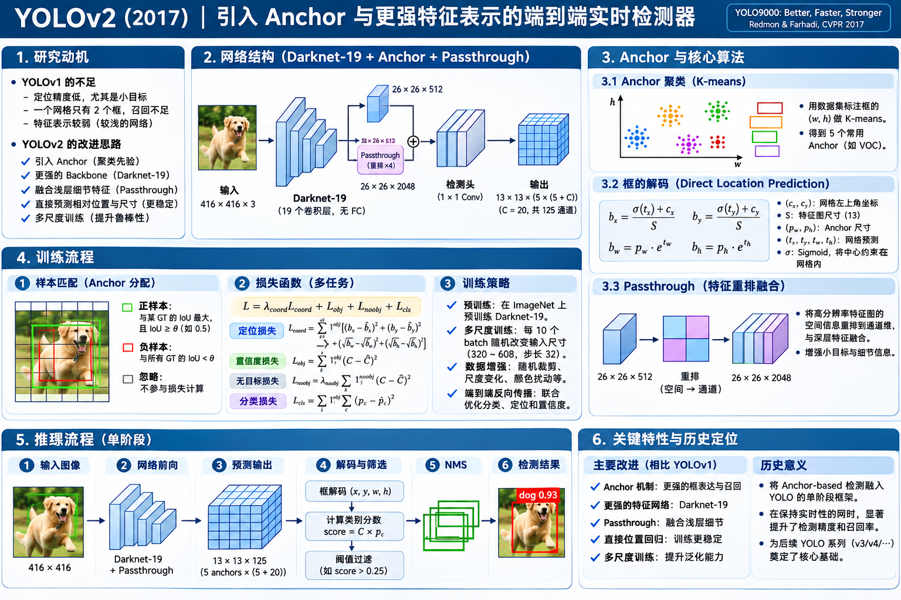

YOLOv2 网络结构 · 核心算法 · 训练与推理
YOLO9000: Better, Faster, Stronger · Joseph Redmon & Ali Farhadi · CVPR 2017
YOLOv1 已经让检测成为单阶段预测，但定位误差与召回率仍然突出。YOLOv2 没有回到 Proposal，而是把检测改造成基于聚类 Anchor 的全卷积预测：让框更好学、位置更稳定、细节更丰富，同时保持快速推理。
研究问题：YOLOv1 已经很快，为什么还要改？
按 2016–2017 年的真实问题理解模型，不用现代架构反向解释它。
YOLOv1 用固定网格 + FC 一次预测整图，避开了两阶段 Proposal 的开销；但它只有 98 个框、每网格共享 1 组类别概率，定位较粗且召回有限。同期 Faster R-CNN 证明 Anchor 这种“先验框 + 偏移回归”有助于定位，SSD 则证明了卷积式密集预测的潜力。YOLOv2 将这些思路重新组织成一个更强的单阶段检测器。
每格 2 框
共享 20 类概率
共 98 框
预测框覆盖不足
多尺度泛化欠佳
每格 5 个 Anchor
每 Anchor 有分类
共 845 框
定位与召回
聚类 Anchor + sigmoid 中心定位，改善框的初始化与训练稳定性。
轻量 Backbone
用 Darknet-19 替换更重的特征提取方案，兼顾算力与准确率。
尺度与细节
Passthrough 引入较高分辨率特征，多尺度训练适应不同输入。
网络结构：从整张图到 13 × 13 × 125
一张总图展示 Backbone、特征通路、检测头、输出张量与预测语义。

YOLOv2 是不是像 SSD 一样在多层特征图分别预测？不是。 典型 YOLOv2 只有一个 13×13 检测输出；较浅层特征经 Passthrough 重排后拼接到深层特征，再由统一 Head 输出。
① 单阶段全卷积
舍弃 YOLOv1 的 FC 检测输出，输入空间尺寸可改变，预测来自空间网格对应的卷积输出。
② 细粒度特征重排
将 26×26×512 按 2×2 邻域挪到通道，再与 13×13 深层特征拼接。
③ Anchor-based 检测头
每格 5 个先验宽高，每个 Anchor 都有自己的位置、objectness 与类别分数。
2.1 Darknet-19：为什么要重做 Backbone？
YOLOv2 作者没有单纯把网络堆得更深：Darknet-19 使用 19 层卷积 + 5 层最大池化，以 3×3 卷积为主体，在中间插入 1×1 压缩通道，并使用 Batch Normalization。其分类版本在末端用全局平均池化，而检测版本替换分类尾部。
分类预训练怎么做
先以 ImageNet 分类任务训练 224×224 输入，随后用 448×448 分类图像再微调 10 个 epoch，最后再迁移到检测数据。这是为了避免从低分辨率分类直接切换到高分辨率检测造成双重适应负担。
为什么称为 Faster
论文报告 Darknet-19 在 224×224 分类推理下约需 5.58 billion operations，比 VGG-16 的约 30.69 billion operations 更轻。速度还与硬件、算子实现和输入分辨率有关。
2.2 Passthrough：26×26 怎样接到 13×13？
不同空间大小的 Feature Map 为什么能拼接？因为它先做空间到通道的重排（reorg / space-to-depth），不是直接把 26×26 和 13×13 生硬连接。
对实际特征张量：每 2×2 邻域、每通道 4 个空间位置 → 同一输出空间位置的 4 个通道，因此 26×26×512 → 13×13×2048，没有丢掉这四个采样点的值。
2.3 为什么输出是 13 × 13 × 125？
13 × 13 × 125 = 21,125 个标量
13 × 13 × 5 = 845 个候选框
五项分别是 tₓ,tᵧ,t𝓌,tₕ,tₒ，另有 C 个类别条件概率。与 YOLOv1 不同，每一个 Anchor 单独拥有类别分数，不再由同一网格的两个框共享一组类别概率。
Pr(object) × IoU(pred, GT) 的量，不能简单等同于现代某些检测头使用的纯二分类 objectness。核心算法一：Dimension Clusters 得到 5 个 Anchor
先从训练框形状里挑“常见模板”，再用网络预测对模板的修正。
Faster R-CNN 的经典 Anchor 组合一般由人为指定尺度与比例。YOLOv2 改为把训练集中所有 GT 框的 (宽，高) 做 K-means 聚类；它不聚类图像像素、也不在推理时再运行 K-means。聚类完成后，5 个宽高模板固定用于检测头。
① 为什么不是欧氏距离？
直接用宽、高的欧氏距离，大框往往主导误差。1 − IoU 更关注宽高比例与形状重叠。
② 为什么选 K=5？
论文通过平均 IoU 与模板数量权衡，发现 5 个聚类模板是不错的复杂度/覆盖率折中。
③ 5 个 Anchor 是什么？
每个网格位置都复用 5 种宽高模板。预测头分别输出它们的偏移、置信度和类别。
核心算法二：Direct Location Prediction
为什么“借用 Anchor”以后，YOLOv2 反而还要改变中心坐标的回归方式？
在传统无限制的 Anchor 中心偏移回归中，模型可能把某位置的框中心预测到很远的网格外。YOLOv2 让中心偏移通过 sigmoid 限制在 0～1，某网格负责的预测框中心始终落在该网格内。这让初期训练更容易稳定；框的实际宽高则通过指数函数修正聚类模板。
bₓ = σ(tₓ) + cₓbᵧ = σ(tᵧ) + cᵧb𝓌 = p𝓌 · exp(t𝓌)bₕ = pₕ · exp(tₕ)(cₓ,cᵧ) 为网格左上角在特征图上的整数坐标，(p𝓌,pₕ) 为 Anchor 模板宽高（网格单位）。最终乘以步长 32 或归一化到图像，才能得到像素框。与 YOLOv1 的相同之处
中心相对当前网格预测，单个网格仍承担目标中心的空间归属。这继承了 YOLOv1 “局部中心” 的思想。
与 Faster R-CNN 的关键区别
采用 Anchor 宽高作为先验，但中心回归不是无限制相对 Anchor 中心移动，而是通过 sigmoid 保证中心位于所属网格。
完整训练：标签、责任分配、损失、梯度分别怎样工作？
先建标签，再决定哪个 Anchor 承担该 GT，最后联合优化卷积网络。
Darknet-19 学习分类特征；再用 448 分辨率分类微调。
图像 + 每个 GT 的类别、中心、宽高；训练前离线聚类 Anchor 形状。
每个位置、每个 Anchor 输出 5 个坐标/质量值 + 20 类。
匹配 GT 中心网格及相应 Anchor，建立位置、置信度和类别监督。
检测 Head 与 Backbone 的可训练卷积参数统一通过梯度优化。
5.1 GT 如何告诉网络：哪个框负责回归？
训练时先看 GT 的中心落在哪个网格，再比较该位置的 5 个 Anchor 宽高形状，把最合适的 Anchor 指定为负责预测这个 GT 的正样本。其他预测一般承受无目标监督；与真实目标重叠较高的非负责预测可忽略无目标惩罚，具体依原始实现设置。
| Anchor | 形状 IoU | 状态 |
|---|
5.2 Loss 为什么可以反向传播？
匹配阶段决定谁应该学哪个 GT，预测网络随后产生连续数值 tₓ,tᵧ,t𝓌,tₕ,tₒ,class。损失直接比较预测与监督目标，因此通过这些连续数值把梯度送回检测 Head、Passthrough 与 Darknet-19。
符号表示训练监督的组成，实际实现可设置不同权重、误差形式和忽略规则。
中心位置 Lxy
负责的正样本拟合 GT 相对于网格的中心位置，sigmoid 将解码的中心限制在网格内。
尺寸 Lwh
拟合 GT 相对 Anchor 的宽高变化，即对数空间中的尺度修正 t𝓌,tₕ。
类别 Lcls
正样本预测物体类别的条件概率。不是 YOLOv1 那种每个网格仅一套类别分数。
负责框 Lobj
使该预测的 objectness 与存在目标并考虑预测框重叠质量的目标一致。
其他框 Lnoobj
抑制没有目标的候选，但可忽略与 GT 重叠较高的非负责预测，避免错误惩罚。
哪些参数更新？
最终检测卷积、融合后卷积、Backbone 等网络权重被更新；离线选出的 Anchor 宽高不会作为模型权重自动变动。
5.3 Multi-scale Training：一次训练，不同分辨率运行
因为检测部分是全卷积网络，可以每隔 10 个 mini-batch 在训练中切换输入分辨率，取 320、352、…、608 共 10 档，均能被 32 整除。改变输入尺寸会同时改变最终输出网格大小与候选框数量，模型参数本身不变。
完整推理：845 个候选框怎样成为最终检测？
不需要 Selective Search / RPN；没有 RoI Pooling；只有一次共享卷积前向。
RGB & 归一化
Passthrough + Head
845 组预测
obj × P(class | obj)
得到最终结果
其中 YOLOv2 的 objectness 被训练为考虑 IoU 的质量值，故得分同时体现类别与定位质量。
历史价值与局限：如何定义 YOLOv2 的里程碑？
抓住每项改进的作用，不把后续模型机制提前投射到原论文。
| 维度 | YOLOv1（2016） | YOLOv2（2017） | 研究意义 |
|---|---|---|---|
| 网络结构 | 卷积 + 2 FC | Darknet-19 + 全卷积 Head | 更高效、输入尺寸灵活 |
| 预测位置 | 7×7 网格 | 典型 13×13 网格 | 更多空间位置、更密集预测 |
| 预测框 | 每网格 2 个直接回归框 | 每网格 5 个 K-means 先验框 | 提高候选框覆盖与召回 |
| 类别结构 | 每格共享 C 类条件概率 | 每 Anchor 各有 C 类输出 | 框与类别关联更明确 |
| 定位方式 | 相对网格中心 + 整图宽高 | sigmoid 网格中心 + Anchor 尺度修正 | 便于学习、限制中心回归范围 |
| 细节信息 | 主要依靠单层输出特征 | 26×26 Passthrough 到 13×13 | 加入较细粒度特征 |
| 尺度适应 | 固定 448 训练/检测 | 320～608 多尺度训练 | 一套参数支持速度精度权衡 |
里程碑的价值
把成熟的 Anchor 思想与 YOLO 单阶段预测结合，建立“网格 × 多模板 × 联合检测”的结构，并使用稳定位置回归、聚类宽高和全卷积 Backbone 改善精度与召回。
仍然存在的边界
典型检测输出仍以 13×13 为主，密集小目标与严重遮挡仍有挑战；依赖固定数量与形状的 Anchor，框数随空间网格增长；分类与框预测的监督和后处理仍有设计复杂度。
| YOLOv2 输入 | mAP（VOC 2007） | FPS |
|---|---|---|
| 288×288（测试分辨率） | 69.0% | 91 |
| 352×352 | 73.7% | 81 |
| 416×416 | 76.8% | 67 |
| 480×480 | 77.8% | 59 |
| 544×544 | 78.6% | 40 |
请注意：288×288 出现在论文的推理评估中，但不属于正文给出的多尺度训练随机集合 {320,352,…,608}。
YOLOv2 与 YOLO9000：是同一回事吗？
同一篇论文的两个相关贡献，教学时应分开理解。
YOLOv2 · 更好的检测器
解决检测精度、召回、速度与多尺度适应的问题。上文以 VOC 20 类为基准介绍 13×13×125 的网络输出。
YOLO9000 · 更大的类别词汇表
在 YOLOv2 的检测架构基础上引入 WordTree 类别层级，将 COCO 检测标注与 ImageNet 分类标注联合训练，从而扩展至 9000 多个类别。
有类别 + BBox
能够监督位置、目标性与类别。它教模型“物体在哪里、是什么”。
只有图像类别
缺少可靠 GT 框，不能凭空训练所有位置回归；主要提供分类知识，通过层级类别结构扩充可识别概念。
参考文献与使用边界
以原始论文为优先，图解中的手工数值用于理解机制而非宣称复现训练权重。